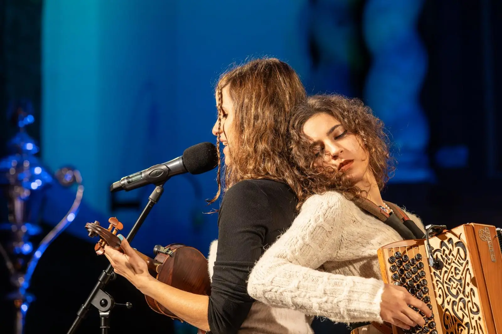
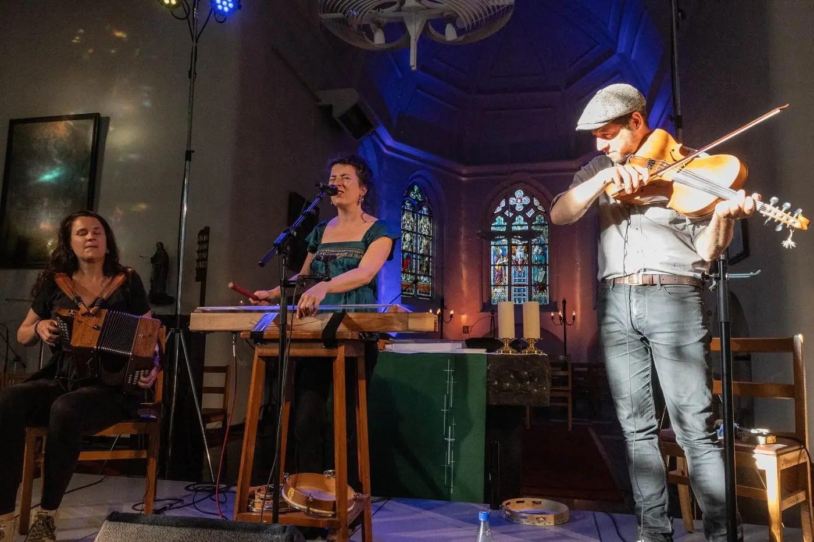
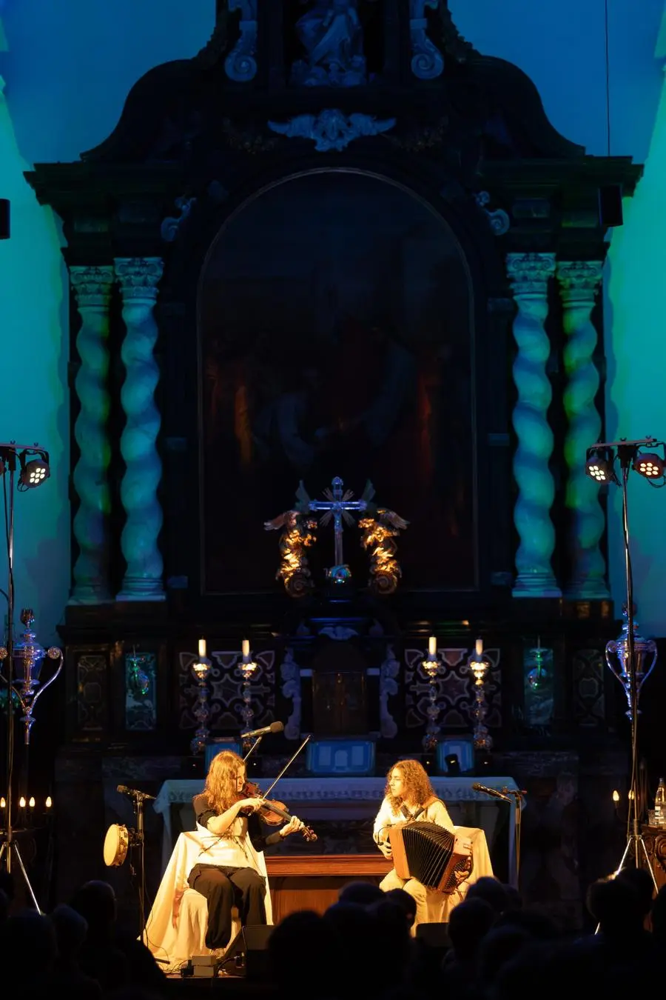

The concept
Every season we programme church concerts with folk and world music. Many of our artists travel a long way for them, sometimes from abroad. For them it is far more worthwhile if they can play more than once during their stay.
That is why each of our church concerts can also be staged at a second venue, in a church outside our own region: for example on a Thursday, the concert that plays with us on the Saturday. That way a tour gets more than one stop, and your church gets an evening with artists you would not otherwise see.
What we take care of
We bring our expertise and our team to your church:
- the programme and the arrangements with the artists
- tailored lighting and sound, and the people to run them
- catering for the artists
- liaising with the church or the building manager
- coordination on the day itself
What you take care of
- making the church available, and the arrangements with the church council or building manager
- audience outreach on site: informing the municipality, inviting local associations and residents, front of house
Agreed together
We set the costs together, depending on the programme and the venue. Who handles ticketing is also decided in consultation: you on site, or through us.
What it looks like with us
A few examples from our own programme:
- Gwen Cresens & Philippe Thuriot, Sint-Pieterskerk, Langdorp (14 November 2026)
- Sam Grassie, Dylan Fowler & Haroun Iqbal: Thursday 3 December 2026 in the Academiezaal in Sint-Truiden (Limburg Sessies) and Saturday 5 December 2026 in the Sint-Pieterskerk in Testelt
Organised by Merodefestival, together with the local partner.



Watch and listen
Laura Cortese’s acoustic evenings II, met Kaia Kater, Dirk Powell, Anna Massie & Nic Gareiss